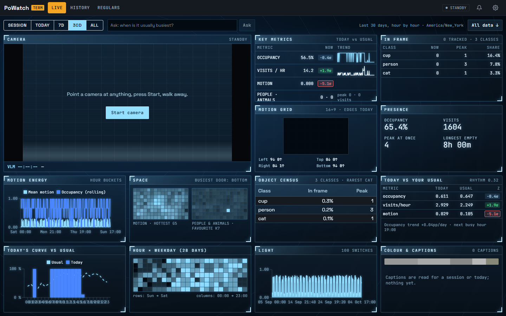
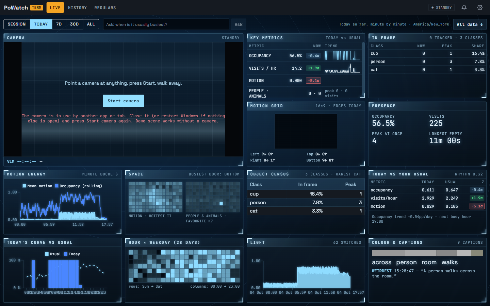
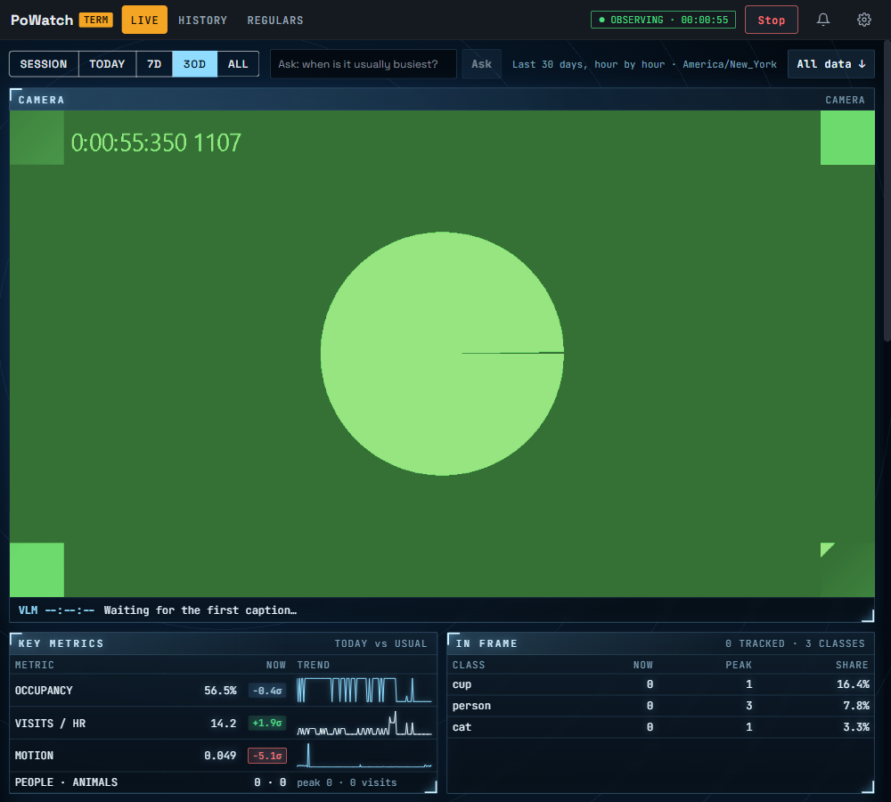
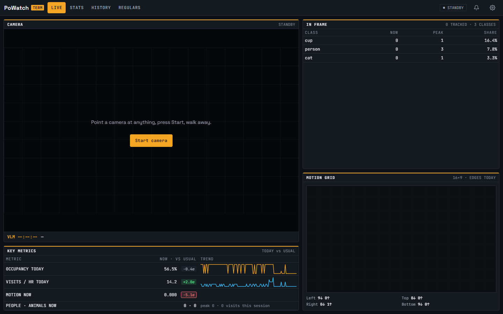

Captured 4 October 2026 from the running Development app (guest account, seeded synthetic history; the green pattern is Chromium's fake test camera).
Numbered markers on each screenshot match the notes under it.
what was therewhat changed
After
AFTER · one page, 4×4, standby (1440×900, range 30D)

12345678910
Three section keys. Stats is gone; Live is the dashboard.
Camera takes 2×2 of the sixteen cells.
Key metrics, In frame, Motion grid: the live panels, with shorter labels.
Presence shows four headline numbers; the rest is in the JSON file.
Space: two heatmaps; the doors line stays on the live Motion grid.
Object census: class, share, peak.
Today vs usual: the σ column moved to the JSON file.
Light and Colour & captions are separate cells again.
All data ↓ downloads every stat family for the range as one JSON file, with raw ticks and events for session and today.
The look: cold glass panels, corner brackets, glowing figures, rings behind the grid, scanlines over the feed.
AFTER · a session running (fake test camera; taken before the second chart colour changed from white to blue)

12
The feed docks at 16:9, desaturated and washed blue.
Motion grid keeps 16:9 inside its cell.
AFTER · narrower window (1000 wide)

1
Below 1280 px the grid drops to two columns (one on a phone) and the page scrolls.
Before
BEFORE · Live

1
Live had four panels: camera, key metrics, in frame, motion grid.
 1
1